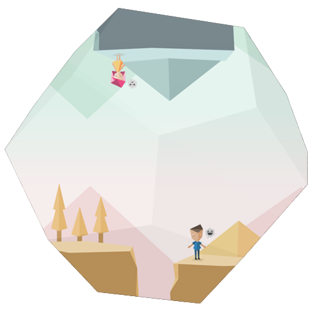

<div class="row">


	<div class="fr-work-text col-xs-12 col-md-4 col-md-push-8">
		<h3>{{page.title}}</h3>
		<h5>{{page.year}}</h5>
		<h6>{{page.tags}}</h6>
		{% if page.collab %}
		<h6> in collaboration with {{page.collab}}</h6>
		{% endif %}
		  
		<p>
			As a living creature staring into two dimension screen, we human seek to give a sense to these imaginary world. Physics phenomenon is part of our life. iPhone droping down because of gravity, ping-pong bouncing from the floor, bird flocking in the sky, or even a physic simulation game in Angry Bird. This is a game that everyone play, universal rule and common understanding of all earthlings. Translating those rules into the world of flatscreen need deep understanding of those rules, mathematical functions involved, and intuition of how things should work. While that might sounds like a super geeky stuffs, I've found the world makes much more sense when you understand its code. 
		</p>
		<p>
			These projects are written in OpenFrameworks (C++).
		</p>

	</div>


	<div class="fr-work-img col-xs-12 col-md-8 col-md-pull-4">  

		

	</div>


</div>
{% include worktile.html %}